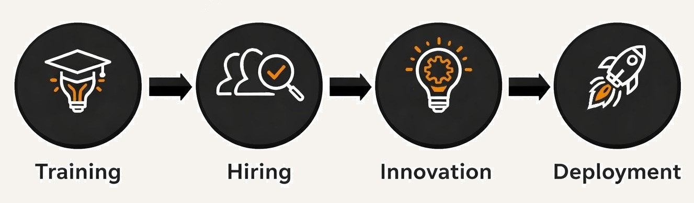

Advancing the Future of Digital Risk
Training and deploying digital risk practitioners for today’s evolving
cyber and technology risk landscape,
Institute of Digital Risk (IDR) brings together academic collaboration and industry practice
to develop the next generation of risk professionals.
IDR works with academic partners and industry organisations to create meaningful learning opportunities and real-world exposure.
Participants gain practical insight into digital risk frameworks, governance models, and emerging challenges across modern technology environments.
Explore Programs
About IDR
The Institute of Digital Risk (IDR) is an industry-led training and deployment institute focused on preparing professionals for roles in digital, cyber, and technology risk. As digital systems become central to modern organisations, managing risk in complex and regulated environments has become increasingly important. IDR aims to develop practitioners who are equipped to operate in high-consequence sectors such as financial services, critical infrastructure, and other technology-driven industries where effective risk management is essential.
IDR brings together academic insight and real-world industry experience through collaboration with a UK university partner. This partnership enables the integration of academic research, structured learning, and practical projects that reflect current challenges in digital risk management. By combining academic foundations with hands-on exposure to industry frameworks and practices, IDR ensures that its trainees develop both the theoretical understanding and applied skills required to navigate the evolving digital risk landscape.
Our Core Pillars
Academy
Training and bootcamps for students and professionals.
Innovation & Incubation
Developing IP, Future risk models, AI governance.
Advisory Services
Helping organisations implement various frameworks.
The IDR Journey

Our Community
The IDR community brings together students, early-career professionals, and experienced practitioners who are looking to build or strengthen their expertise in digital and cyber risk. Many members come from sectors such as financial services, technology, and critical infrastructure, where managing digital risk is essential. Through training, collaboration, and industry engagement, IDR supports individuals who want to develop the skills needed to navigate complex digital environments and contribute to resilient, secure systems.
Members of the community often come from sectors such as financial services, technology, government, and critical infrastructure, where strong digital risk management is essential for maintaining secure and resilient systems. As organisations become increasingly dependent on digital technologies, professionals across these sectors must continuously adapt to new challenges and emerging threats.
- Register Your Interest -
Interested in learning more about IDR programs or collaborating with us? Send us a message and our team will get in touch.